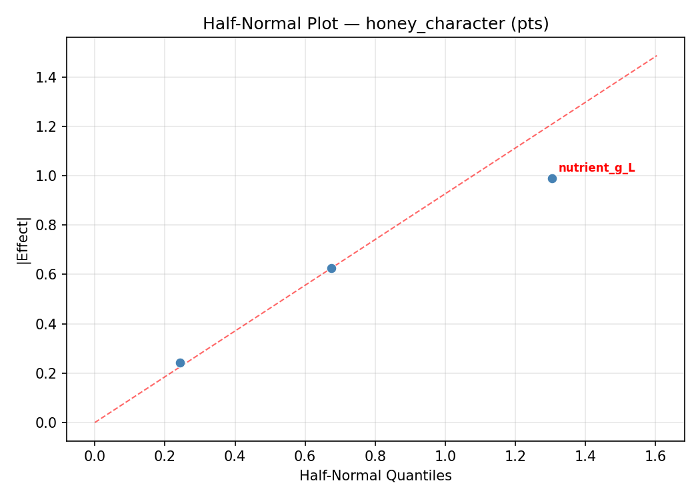
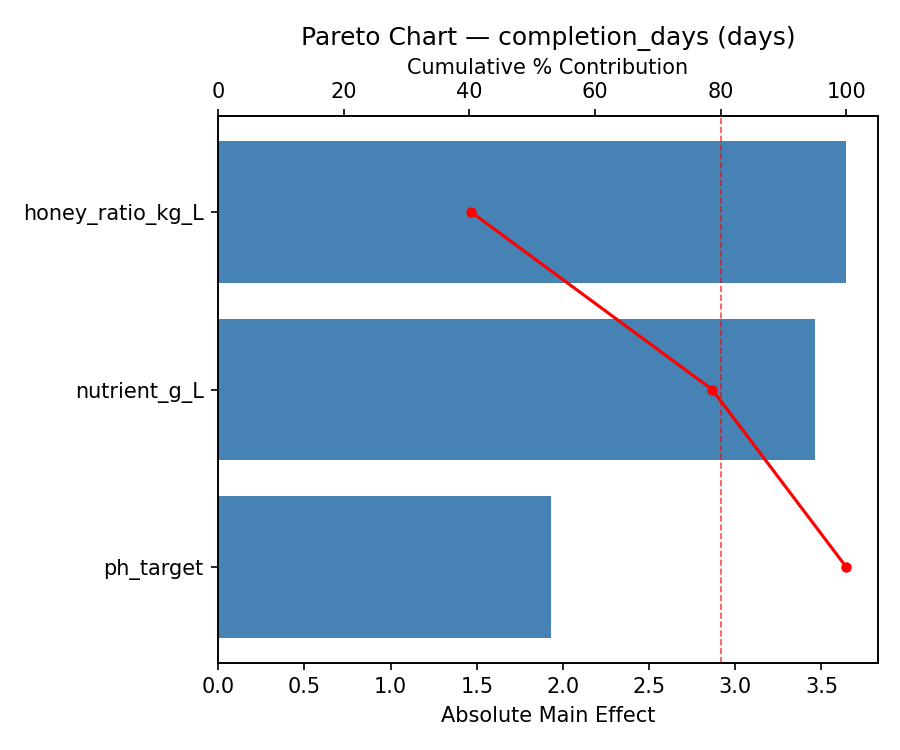
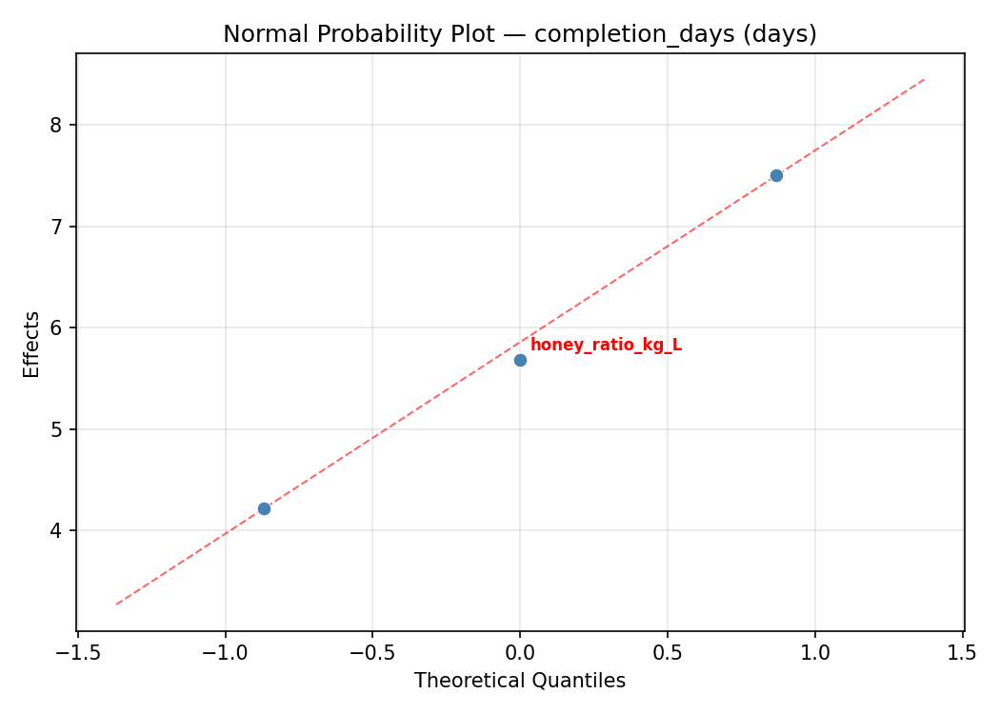
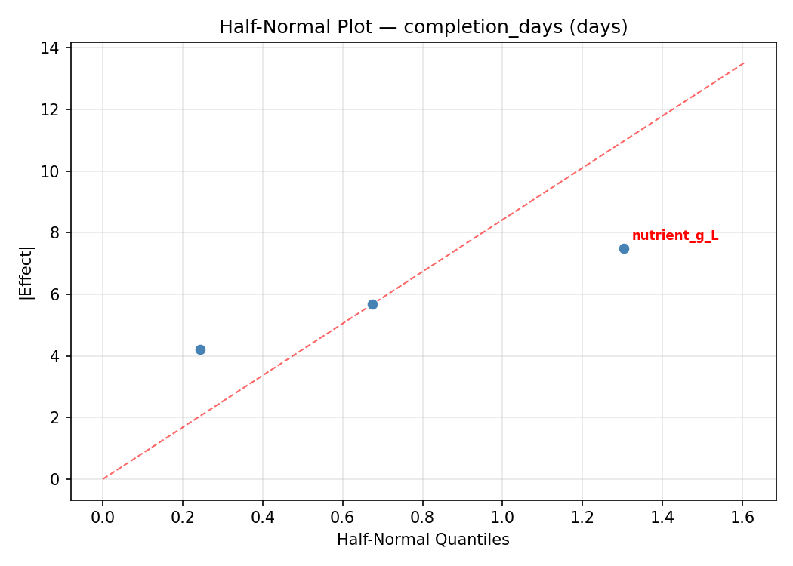
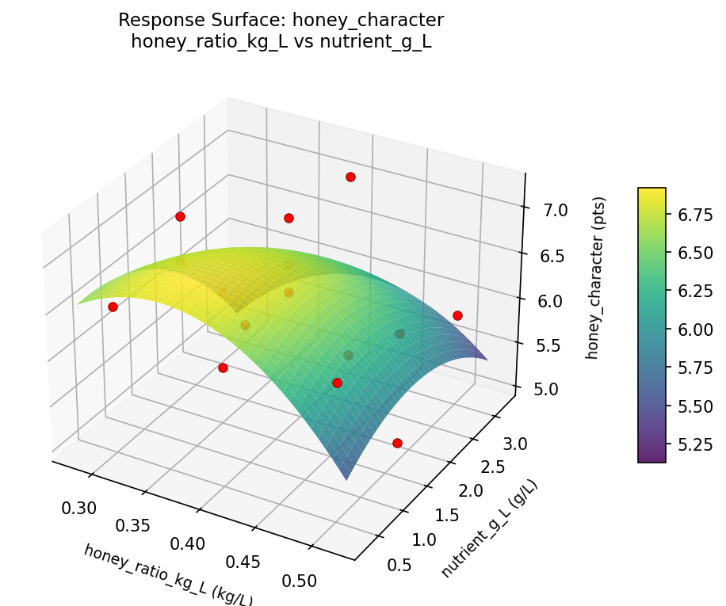
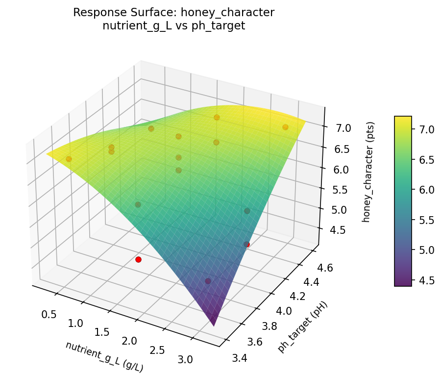

Summary
This experiment investigates mead (honey wine) production. Box-Behnken design to maximize honey character and minimize fermentation stalls by tuning honey-to-water ratio, nutrient additions, and pH adjustment.
The design varies 3 factors: honey ratio kg L (kg/L), ranging from 0.3 to 0.5, nutrient g L (g/L), ranging from 0.5 to 3.0, and ph target (pH), ranging from 3.5 to 4.5. The goal is to optimize 2 responses: honey character (pts) (maximize) and completion days (days) (minimize). Fixed conditions held constant across all runs include honey type = wildflower, yeast = d47.
A Box-Behnken design was chosen because it efficiently fits quadratic models with 3 continuous factors while avoiding extreme corner combinations — requiring only 15 runs instead of the 8 needed for a full factorial at two levels.
Quadratic response surface models were fitted to capture potential curvature and factor interactions. The RSM contour plots below visualize how pairs of factors jointly affect each response.
Key Findings
For honey character, the most influential factors were nutrient g L (38.6%), ph target (32.3%), honey ratio kg L (29.1%). The best observed value was 7.2 (at honey ratio kg L = 0.5, nutrient g L = 1.75, ph target = 4.5).
For completion days, the most influential factors were honey ratio kg L (41.2%), ph target (38.8%), nutrient g L (20.1%). The best observed value was 15.0 (at honey ratio kg L = 0.4, nutrient g L = 3, ph target = 3.5).
Recommended Next Steps
- Run confirmation experiments at the predicted optimal settings to validate the model.
- Consider whether any fixed factors should be varied in a future study.
Experimental Setup
Factors
| Factor | Low | High | Unit |
|---|
honey_ratio_kg_L | 0.3 | 0.5 | kg/L |
nutrient_g_L | 0.5 | 3.0 | g/L |
ph_target | 3.5 | 4.5 | pH |
Fixed: honey_type = wildflower, yeast = d47
Responses
| Response | Direction | Unit |
|---|
honey_character | ↑ maximize | pts |
completion_days | ↓ minimize | days |
Configuration
{
"metadata": {
"name": "Mead (Honey Wine) Production",
"description": "Box-Behnken design to maximize honey character and minimize fermentation stalls by tuning honey-to-water ratio, nutrient additions, and pH adjustment"
},
"factors": [
{
"name": "honey_ratio_kg_L",
"levels": [
"0.3",
"0.5"
],
"type": "continuous",
"unit": "kg/L"
},
{
"name": "nutrient_g_L",
"levels": [
"0.5",
"3.0"
],
"type": "continuous",
"unit": "g/L"
},
{
"name": "ph_target",
"levels": [
"3.5",
"4.5"
],
"type": "continuous",
"unit": "pH"
}
],
"fixed_factors": {
"honey_type": "wildflower",
"yeast": "d47"
},
"responses": [
{
"name": "honey_character",
"optimize": "maximize",
"unit": "pts"
},
{
"name": "completion_days",
"optimize": "minimize",
"unit": "days"
}
],
"settings": {
"operation": "box_behnken",
"test_script": "use_cases/241_mead_honey_wine/sim.sh"
}
}
Experimental Matrix
The Box-Behnken Design produces 15 runs. Each row is one experiment with specific factor settings.
| Run | honey_ratio_kg_L | nutrient_g_L | ph_target |
|---|
| 1 | 0.4 | 0.5 | 3.5 |
| 2 | 0.4 | 1.75 | 4 |
| 3 | 0.5 | 1.75 | 4.5 |
| 4 | 0.5 | 1.75 | 3.5 |
| 5 | 0.4 | 1.75 | 4 |
| 6 | 0.4 | 1.75 | 4 |
| 7 | 0.3 | 1.75 | 4.5 |
| 8 | 0.5 | 0.5 | 4 |
| 9 | 0.4 | 0.5 | 4.5 |
| 10 | 0.5 | 3 | 4 |
| 11 | 0.3 | 1.75 | 3.5 |
| 12 | 0.4 | 3 | 4.5 |
| 13 | 0.3 | 0.5 | 4 |
| 14 | 0.3 | 3 | 4 |
| 15 | 0.4 | 3 | 3.5 |
Step-by-Step Workflow
1
Preview the design
$ doe info --config use_cases/241_mead_honey_wine/config.json
2
Generate the runner script
$ doe generate --config use_cases/241_mead_honey_wine/config.json \
--output use_cases/241_mead_honey_wine/results/run.sh --seed 42
3
Execute the experiments
$ bash use_cases/241_mead_honey_wine/results/run.sh
4
Analyze results
$ doe analyze --config use_cases/241_mead_honey_wine/config.json
5
Get optimization recommendations
$ doe optimize --config use_cases/241_mead_honey_wine/config.json
6
Multi-objective optimization
With 2 competing responses, use --multi to find the best compromise via Derringer–Suich desirability.
$ doe optimize --config use_cases/241_mead_honey_wine/config.json --multi
7
Generate the HTML report
$ doe report --config use_cases/241_mead_honey_wine/config.json \
--output use_cases/241_mead_honey_wine/results/report.html
Features Exercised
| Feature | Value |
|---|
| Design type | box_behnken |
| Factor types | continuous (all 3) |
| Arg style | double-dash |
| Responses | 2 (honey_character ↑, completion_days ↓) |
| Total runs | 15 |
Analysis Results
Generated from actual experiment runs using the DOE Helper Tool.
Response: honey_character
Top factors: nutrient_g_L (38.6%), ph_target (32.3%), honey_ratio_kg_L (29.1%).
ANOVA
| Source | DF | SS | MS | F | p-value |
|---|
| Source | DF | SS | MS | F | p-value |
| honey_ratio_kg_L | 2 | 0.5355 | 0.2678 | 0.241 | 0.7912 |
| nutrient_g_L | 2 | 0.9252 | 0.4626 | 0.417 | 0.6727 |
| ph_target | 2 | 0.6255 | 0.3128 | 0.282 | 0.7616 |
| Lack | of | Fit | 6 | 2.7110 | 0.4518 |
| Pure | Error | 2 | 2.2200 | | |
| Error | 8 | 4.9310 | 1.1100 | | |
| Total | 14 | 7.0173 | 0.5012 | | |
Pareto Chart

Main Effects Plot

Normal Probability Plot of Effects

Half-Normal Plot of Effects

Model Diagnostics

Response: completion_days
Top factors: honey_ratio_kg_L (41.2%), ph_target (38.8%), nutrient_g_L (20.1%).
ANOVA
| Source | DF | SS | MS | F | p-value |
|---|
| Source | DF | SS | MS | F | p-value |
| honey_ratio_kg_L | 2 | 229.9929 | 114.9964 | 0.843 | 0.4652 |
| nutrient_g_L | 2 | 48.9929 | 24.4964 | 0.180 | 0.8388 |
| ph_target | 2 | 218.3857 | 109.1929 | 0.801 | 0.4819 |
| Lack | of | Fit | 6 | 583.5619 | 97.2603 |
| Pure | Error | 2 | 272.6667 | | |
| Error | 8 | 856.2286 | 136.3333 | | |
| Total | 14 | 1353.6000 | 96.6857 | | |
Pareto Chart

Main Effects Plot

Normal Probability Plot of Effects

Half-Normal Plot of Effects

Model Diagnostics

Response Surface Plots
3D surfaces fitted with quadratic RSM. Red dots are observed data points.
completion days honey ratio kg L vs nutrient g L

completion days honey ratio kg L vs ph target

completion days nutrient g L vs ph target

honey character honey ratio kg L vs nutrient g L

honey character honey ratio kg L vs ph target

honey character nutrient g L vs ph target

Multi-Objective Optimization
When responses compete, Derringer–Suich desirability finds the best compromise.
Each response is scaled to a 0–1 desirability, then combined via a weighted geometric mean.
Overall Desirability
D = 0.7238
Per-Response Desirability
| Response | Weight | Desirability | Predicted | Dir |
|---|
honey_character |
1.5 |
|
6.50 0.6515 6.50 pts |
↑ |
completion_days |
1.0 |
|
19.00 0.8476 19.00 days |
↓ |
Recommended Settings
| Factor | Value |
|---|
honey_ratio_kg_L | 0.4 kg/L |
nutrient_g_L | 1.75 g/L |
ph_target | 4 pH |
Source: from observed run #12
Trade-off Summary
Sacrifice = how much worse than single-objective best.
| Response | Predicted | Best Observed | Sacrifice |
|---|
completion_days | 19.00 | 15.00 | +4.00 |
Top 3 Runs by Desirability
| Run | D | Factor Settings |
|---|
| #6 | 0.6449 | honey_ratio_kg_L=0.3, nutrient_g_L=0.5, ph_target=4 |
| #3 | 0.6313 | honey_ratio_kg_L=0.5, nutrient_g_L=0.5, ph_target=4 |
Model Quality
| Response | R² | Type |
|---|
completion_days | 0.2839 | linear |
Full Multi-Objective Output
============================================================
MULTI-OBJECTIVE OPTIMIZATION
Method: Derringer-Suich Desirability Function
============================================================
Overall desirability: D = 0.7238
Response Weight Desirability Predicted Direction
---------------------------------------------------------------------
honey_character 1.5 0.6515 6.50 pts ↑
completion_days 1.0 0.8476 19.00 days ↓
Recommended settings:
honey_ratio_kg_L = 0.4 kg/L
nutrient_g_L = 1.75 g/L
ph_target = 4 pH
(from observed run #12)
Trade-off summary:
honey_character: 6.50 (best observed: 7.20, sacrifice: +0.70)
completion_days: 19.00 (best observed: 15.00, sacrifice: +4.00)
Model quality:
honey_character: R² = 0.7639 (quadratic)
completion_days: R² = 0.2839 (linear)
Top 3 observed runs by overall desirability:
1. Run #12 (D=0.7238): honey_ratio_kg_L=0.4, nutrient_g_L=1.75, ph_target=4
2. Run #6 (D=0.6449): honey_ratio_kg_L=0.3, nutrient_g_L=0.5, ph_target=4
3. Run #3 (D=0.6313): honey_ratio_kg_L=0.5, nutrient_g_L=0.5, ph_target=4
Full Analysis Output
=== Main Effects: honey_character ===
Factor Effect Std Error % Contribution
--------------------------------------------------------------
nutrient_g_L 0.5679 0.1828 38.6%
ph_target 0.4750 0.1828 32.3%
honey_ratio_kg_L 0.4286 0.1828 29.1%
=== ANOVA Table: honey_character ===
Source DF SS MS F p-value
-----------------------------------------------------------------------------
honey_ratio_kg_L 2 0.5355 0.2678 0.241 0.7912
nutrient_g_L 2 0.9252 0.4626 0.417 0.6727
ph_target 2 0.6255 0.3128 0.282 0.7616
Lack of Fit 6 2.7110 0.4518 0.407 0.8338
Pure Error 2 2.2200 1.1100
Error 8 4.9310 1.1100
Total 14 7.0173 0.5012
=== Summary Statistics: honey_character ===
honey_ratio_kg_L:
Level N Mean Std Min Max
------------------------------------------------------------
0.3 4 6.1750 0.7274 5.1000 6.7000
0.4 7 6.1714 0.8118 5.1000 7.2000
0.5 4 6.6000 0.5598 5.9000 7.1000
nutrient_g_L:
Level N Mean Std Min Max
------------------------------------------------------------
0.5 4 5.8750 0.9674 5.1000 7.1000
1.75 7 6.4429 0.6803 5.1000 7.2000
3 4 6.4250 0.4113 5.9000 6.9000
ph_target:
Level N Mean Std Min Max
------------------------------------------------------------
3.5 4 6.6250 0.3862 6.2000 7.0000
4 7 6.1714 0.8577 5.1000 7.2000
4.5 4 6.1500 0.7141 5.1000 6.7000
=== Main Effects: completion_days ===
Factor Effect Std Error % Contribution
--------------------------------------------------------------
honey_ratio_kg_L 9.7500 2.5388 41.2%
ph_target 9.1786 2.5388 38.8%
nutrient_g_L 4.7500 2.5388 20.1%
=== ANOVA Table: completion_days ===
Source DF SS MS F p-value
-----------------------------------------------------------------------------
honey_ratio_kg_L 2 229.9929 114.9964 0.843 0.4652
nutrient_g_L 2 48.9929 24.4964 0.180 0.8388
ph_target 2 218.3857 109.1929 0.801 0.4819
Lack of Fit 6 583.5619 97.2603 0.713 0.6834
Pure Error 2 272.6667 136.3333
Error 8 856.2286 136.3333
Total 14 1353.6000 96.6857
=== Summary Statistics: completion_days ===
honey_ratio_kg_L:
Level N Mean Std Min Max
------------------------------------------------------------
0.3 4 29.2500 10.4043 19.0000 43.0000
0.4 7 30.8571 9.3529 15.0000 44.0000
0.5 4 39.0000 9.5568 26.0000 49.0000
nutrient_g_L:
Level N Mean Std Min Max
------------------------------------------------------------
0.5 4 29.7500 7.6757 24.0000 41.0000
1.75 7 33.1429 11.3053 15.0000 49.0000
3 4 34.5000 10.9697 19.0000 44.0000
ph_target:
Level N Mean Std Min Max
------------------------------------------------------------
3.5 4 38.7500 9.1788 28.0000 49.0000
4 7 29.5714 10.5334 15.0000 41.0000
4.5 4 31.7500 8.5000 26.0000 44.0000
Optimization Recommendations
=== Optimization: honey_character ===
Direction: maximize
Best observed run: #3
honey_ratio_kg_L = 0.5
nutrient_g_L = 1.75
ph_target = 4.5
Value: 7.2
RSM Model (linear, R² = 0.1970, Adj R² = -0.0220):
Coefficients:
intercept +6.2867
honey_ratio_kg_L +0.0125
nutrient_g_L -0.3875
ph_target +0.1500
RSM Model (quadratic, R² = 0.6277, Adj R² = -0.0424):
Coefficients:
intercept +6.0000
honey_ratio_kg_L +0.0125
nutrient_g_L -0.3875
ph_target +0.1500
honey_ratio_kg_L*nutrient_g_L +0.2250
honey_ratio_kg_L*ph_target -0.0500
nutrient_g_L*ph_target +0.0000
honey_ratio_kg_L^2 +0.7875
nutrient_g_L^2 -0.3125
ph_target^2 +0.0625
Curvature analysis:
honey_ratio_kg_L coef=+0.7875 convex (has a minimum)
nutrient_g_L coef=-0.3125 concave (has a maximum)
ph_target coef=+0.0625 negligible curvature
Predicted optimum (from linear model, at observed points):
honey_ratio_kg_L = 0.4
nutrient_g_L = 0.5
ph_target = 4.5
Predicted value: 6.8242
Surface optimum (via L-BFGS-B, linear model):
honey_ratio_kg_L = 0.5
nutrient_g_L = 0.5
ph_target = 4.5
Predicted value: 6.8367
Model quality: Weak fit — consider adding center points or using a different design.
Factor importance:
1. honey_ratio_kg_L (effect: 0.8, contribution: 43.2%)
2. nutrient_g_L (effect: 0.8, contribution: 40.9%)
3. ph_target (effect: 0.3, contribution: 15.8%)
=== Optimization: completion_days ===
Direction: minimize
Best observed run: #14
honey_ratio_kg_L = 0.4
nutrient_g_L = 3
ph_target = 3.5
Value: 15.0
RSM Model (linear, R² = 0.2789, Adj R² = 0.0822):
Coefficients:
intercept +32.6000
honey_ratio_kg_L -3.7500
nutrient_g_L -5.7500
ph_target -0.2500
RSM Model (quadratic, R² = 0.7443, Adj R² = 0.2839):
Coefficients:
intercept +37.6667
honey_ratio_kg_L -3.7500
nutrient_g_L -5.7500
ph_target -0.2500
honey_ratio_kg_L*nutrient_g_L -1.0000
honey_ratio_kg_L*ph_target +2.5000
nutrient_g_L*ph_target +7.0000
honey_ratio_kg_L^2 +0.6667
nutrient_g_L^2 -10.3333
ph_target^2 +0.1667
Curvature analysis:
nutrient_g_L coef=-10.3333 concave (has a maximum)
honey_ratio_kg_L coef=+0.6667 convex (has a minimum)
ph_target coef=+0.1667 convex (has a minimum)
Notable interactions:
nutrient_g_L*ph_target coef=+7.0000 (synergistic)
honey_ratio_kg_L*ph_target coef=+2.5000 (synergistic)
honey_ratio_kg_L*nutrient_g_L coef=-1.0000 (antagonistic)
Predicted optimum (from quadratic model, at observed points):
honey_ratio_kg_L = 0.3
nutrient_g_L = 1.75
ph_target = 3.5
Predicted value: 45.0000
Surface optimum (via L-BFGS-B, quadratic model):
honey_ratio_kg_L = 0.5
nutrient_g_L = 3
ph_target = 3.5
Predicted value: 8.4167
Model quality: Good fit — general trends are captured, some noise remains.
Factor importance:
1. nutrient_g_L (effect: 16.1, contribution: 65.2%)
2. honey_ratio_kg_L (effect: 7.5, contribution: 30.3%)
3. ph_target (effect: 1.1, contribution: 4.5%)